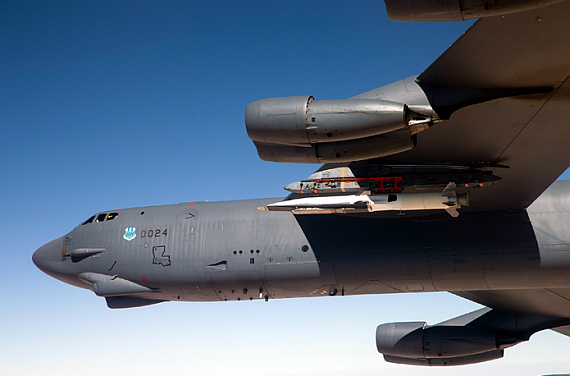
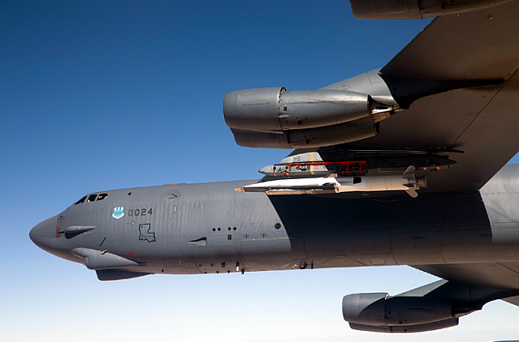
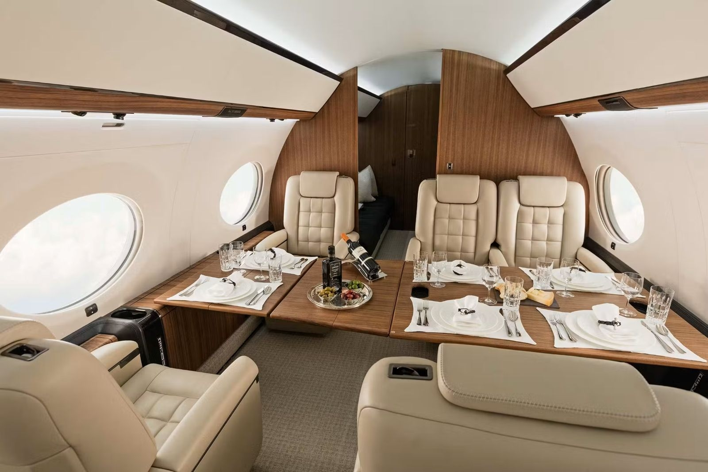
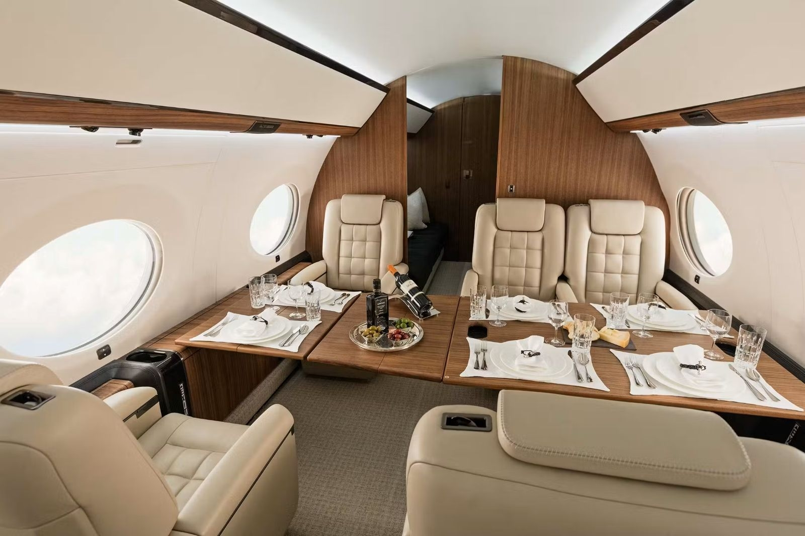

Lockheed Martin
Boeing

Dassault Aviation
Jets like the Lockheed SR-71 Blackbird & MiG-25 "Foxbat" fly at speeds over Mach 3
The Messerschmitt Me 262 was the first jet fighter in World War II.
The F-35 and F-22 use stealth technology to be invisible to radar.

Jets like the Sukhoi Su-57 and F-35 offer advanced technology and high maneuverability.
The Concorde flew at Mach 2, twice the speed of sound.
The Boeing 787 and Airbus A350 enable long flights with high efficiency.
The F-35 Lightning II costs around 100 million USD.
New jets like the Boeing X-51 aim for speeds of Mach 5 and above.
 

Private jets like the Gulfstream G650 offer luxury and comfort.
 
